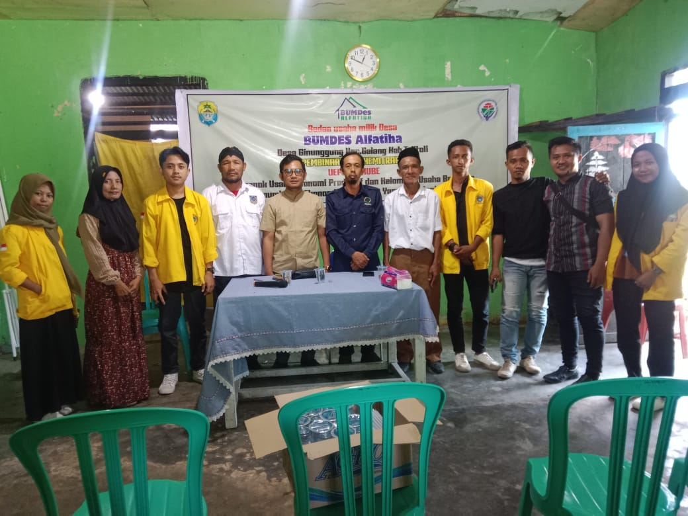
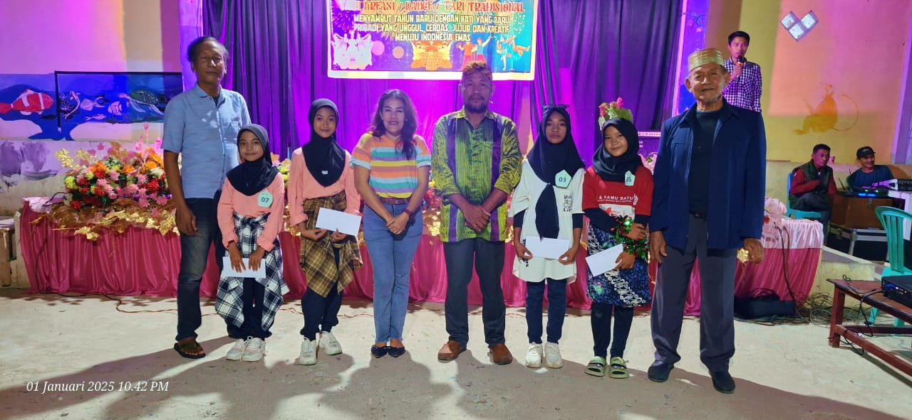
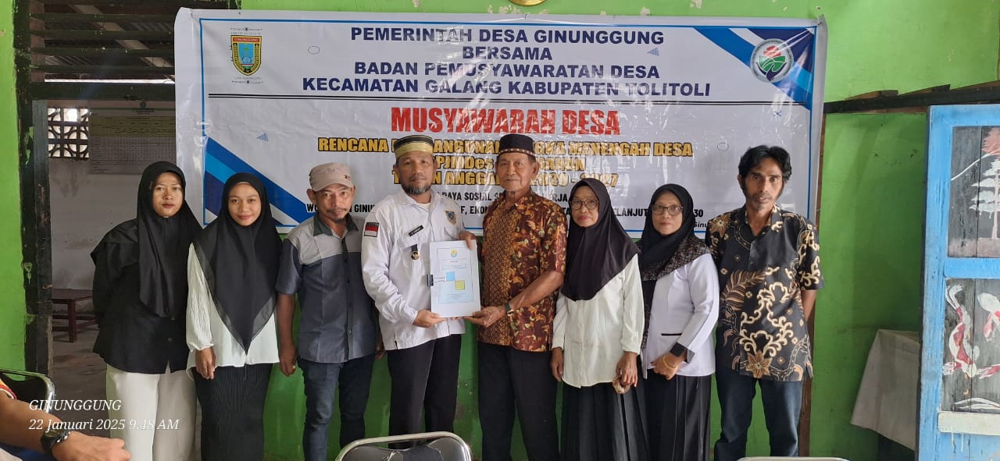
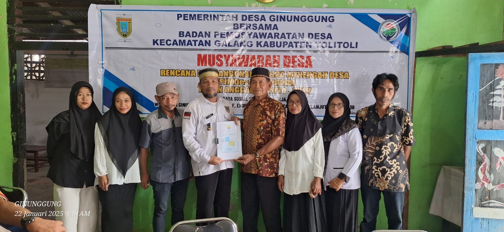
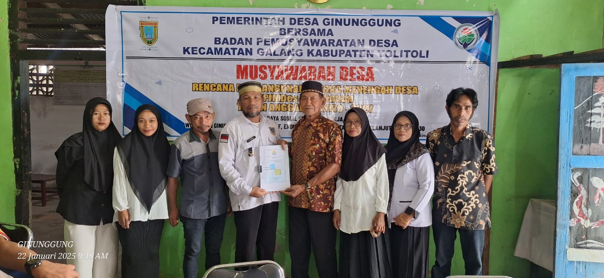

Visi & Misi Desa
Visi :
GERBANG DAYA SOSIAL SEJAHTERA “KERJA BERSAMA” Wujudkan Ginunggung Desa Inklusif Ekonomi Tumbuh Merata dan Berkelanjutan SDGs Desa
NILAI – NILAI YANG MELANDASI :
- Bahwa Dengan Berlakunya Undang – Undang Nomor 23 Tahun 2004 Tentang Pemerintah Daerah Dalam Wujud Otonomi Daerah Secara Utuh, Luas Nyata Dalam Kerangka Negara Kesatuan Republik Indonesia Sesuai Arah Desentralisasi Bagi Desa Dan Kabupaten Maka Perlu Mengoptimalisasikan Fungsi Dusun Sebagai Pelaksana Terdepan Untuk Melayani Masyarakat.
- Bahwa Dalam Upaya Untuk Mengantisipasi Aspirasi Masyarakat Yang Terus Berkembang Dan Menjaga Efisiensi Serta Efektifitas Penyelenggaraan Pemerintahan Yang Akhirnya Bernuansa Pada Pemberian Pelayanan Masyarakat Yang Hakekatnya Semakin Lama Semakin Baik Di Rasakan Disamping Untuk Memberikan Peluang Peran Serta Masayrakat Dalam Kegiatan Masyarakat Dalam Kegiatan Pemerintahan, Pembangunan Dan Kemasyarakatan Secara Lebih Luas Dalam Konteks Demokrasi.
- Bahwa Dengan Berdasarkan Undang – Undang Desa No 06 Tahun 2014 Penyelnggaraan Ppemerintahan Melalui Pemberdayaan Perangkat Desa Dusun RTDan RWSerta Kelembagaan Organisasi Sosial Kemasyarkatan Dapat Meningkatkan Dan Mempercepat Pelayanan Untuk Pemetaan Pembangunan Di Bidang Kemasyarakatan.
Misi :
- Memperkuat restorasi sosial, budaya masyarakat sebagai mahluk ciptaan Allah SWT dan sebagai mahluk sosial yang berbangsa, bernegara, beragama untuk Sejahtera Kerja Bersama melalui tata kelola pemerintahan yang bersih melalui pemberdayaan Dusun/otonomi Dusun.
- Melanjutkan dan menyempurnakan Program Kerja “GERBANG RAJA” Gerakan Membangun Rakyat Sejahtera yang fokus pada pelayanan sosial dasar pemberian bantuan stimulan (bedah rumah) hingga tahun 2023 dan pengembangan ekonomi masyarakat melalui kearifan lokal dengan konsep terpadu, berkelanjutan dan mandiri sesuai potensi dusun atau kearifan lokal.
- Mewujudkan Desa Ginunggung berdaya saing melalui peningkatan Sumber Daya Manusia dibidang pendidikan keterampilan dan kewirausahaan serta peningkatan hidup masyarakat yang sehat jasmani, rohani, lahir dan batin dalam Ridho Allah SWT untuk “Membangun Daya Sosial, Sejahtera, Kerja Bersama”.
Galeri Desa


Aktivitas Desa


 

